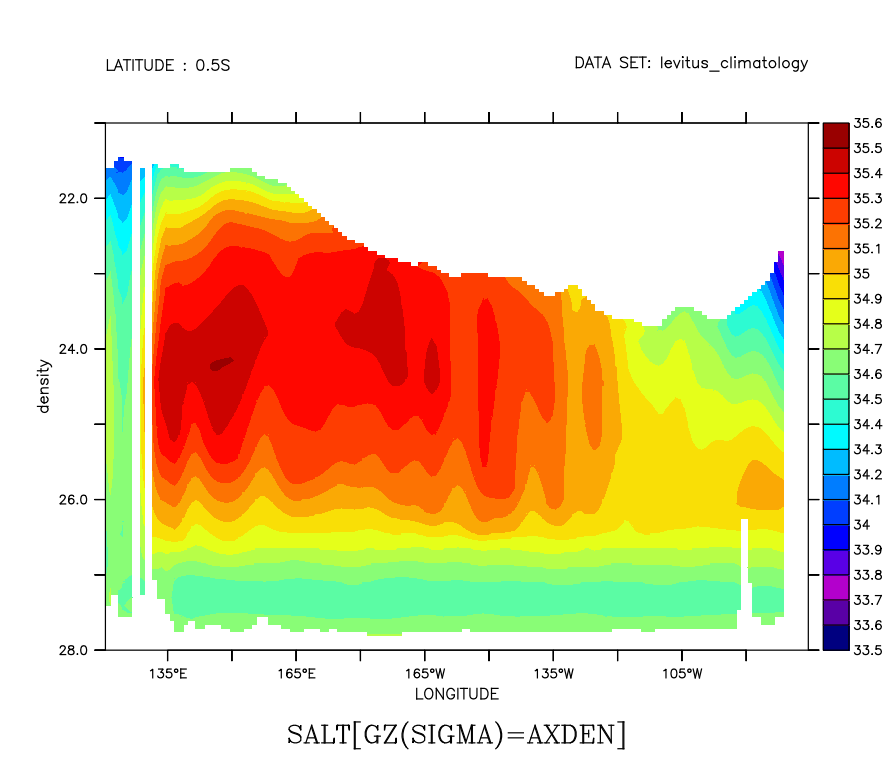

FAQ
Depth axis to Density axis
Depth axis to Density axis
Question:
How can I convert between two depth axes, for example from depth to density?
Solution:
Auxiliary-variable regridding (Ferret v6.95 and higher) applies an Auxiliary coordinate variable in a regridding operation, to apply the conversion in the coordinate variable to the density axis.
! Define the density conversion, and apply a regridding operation yes? set dat levitus_climatology yes? let sigma=rho_un(salt,temp,0)-1000 yes? define axis/z=21:28:.05 axden ! Define the auxiliary regridding operation ! giving the new variable the title of the Salinity variable ! but units of density yes? LET/like=salt/units=density salt_on_density = salt[gz(sigma)=axden] ! Make Pacific plot, labeling the vertical axis as density. yes? fill/y=0/x=120e:75w/vlimits=28:21:-1 salt_on_density
..
Alternate method:
The ZAXREPLACE( salt, sigma, z[gz=axden]) function is designed to do this conversion. It makes the same computations as the auxiliary regridding operation described above.
Argument 1 is the field of data values, say temperature on the "source" Z-axis, which is depth in this case. The second argument, ZVALS, contains values in units of the desired destination Z axis (ZAX) on the Z axis as V for example, density values associated with each vertical depth. The third argument, ZAX, is any variable defined on the destination Z axis, here "Z[gz=zaxis_name]" is used. For example:
! Convert between a depth and density Z axis using the function ZAXREPLACE yes? set dat ocean_atlas_annual ! Define density sigma, then density axis axden yes? let sigma=rho_un(salt,temp,0)-1000 yes? define axis/z=21:28:.05 axden ! Regrid to density yes? let/like=salt/units=sigma saltonsigma= ZAXREPLACE( salt, sigma, z[gz=axden]) ! Make Pacific plot yes? fill/y=0/x=120e:75w/vlimits=28:21:-1 saltonsigma

Note that we could define the new variable with a TITLE and that title would appear on the plot instead of the ZAXREPLACE definition of the variable: LET/UNITS= /TITLE=